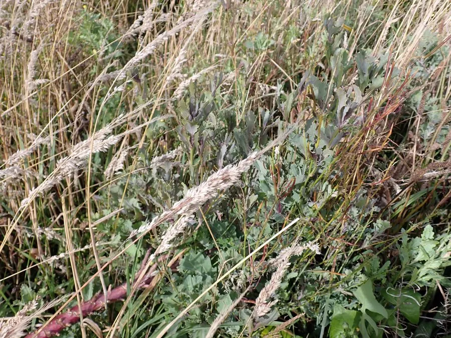

花卉与草本 · 植物界
羽衣甘蓝 Brassica oleracea var. acephala

十字花科二年生草本，叶色斑斓如牡丹绽放，耐寒性强，是秋冬花坛的观叶主角，原产地中海沿岸，嫩叶也可食用。
- 分类
- 门被子植物门纲木兰纲目十字花目科十字花科属芸薹属
- 栖息环境
- 地中海沿岸的石灰质坡地，喜凉爽、阳光充足
- 地理分布
- 原产地中海沿岸，现世界各地栽培，中国各地秋冬花坛常见
- 保护级别
- 暂无评估
物种志
羽衣甘蓝为十字花科芸薹属二年生草本，株高 30–60 厘米，茎短缩。叶片宽大，倒卵形，边缘有波状皱褶，内叶呈白、黄、粉、紫等色，外叶蓝绿色，整体形似盛开的牡丹。总状花序在翌年春季抽出，花黄色，花期 3–4 月；果实为长角果。
羽衣甘蓝是甘蓝的园艺变种，原产地中海沿岸，喜凉爽、阳光充足和排水良好的环境，耐寒力强，可耐 -10℃ 左右低温，霜冻后叶色反而更鲜艳。秋冬季节它叶色斑斓，是花坛、花境和盆栽的观叶主角；嫩叶富含维生素和膳食纤维，也可炒食或做沙拉，但观赏品种口感较硬，以观赏为主；冬季低温时叶色最为浓艳，观赏期可延续到早春。
形态与习性
- 株高30–60 厘米，叶展可达 40 厘米
- 花期翌年 3–4 月抽薹开花
- 果期花后结长角果
- 光照喜充足阳光
- 水分喜湿润，忌积水
- 土壤疏松肥沃、排水良好的壤土
- 主要用途秋冬花坛观叶、盆栽、嫩叶食用
趣味知识
- 羽衣甘蓝内叶的白、粉、紫等色彩，是秋冬花坛的重要配色来源。
- 它耐寒力强，经霜冻后叶色反而更加鲜艳。
- 羽衣甘蓝是甘蓝的园艺变种，与卷心菜、西兰花是近亲。
- 观赏品种的嫩叶可食，但口感较硬，一般以观赏为主。